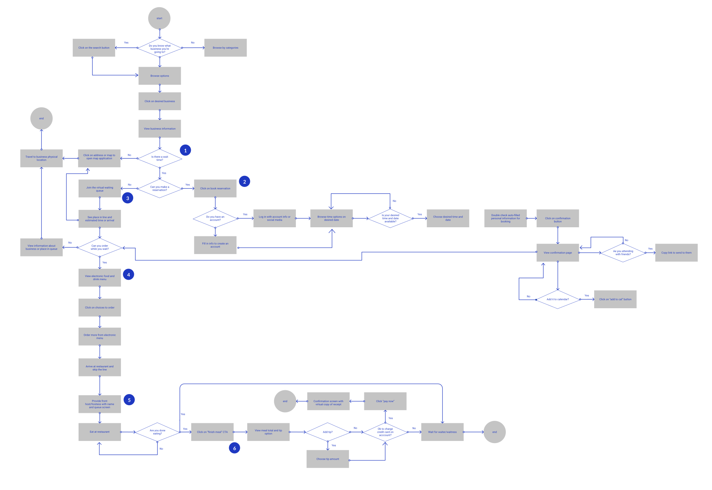

Background
A long time issue in our society is wait times. Given the current climate of the COVID-19 pandemic, wait times have now extended past restaurants to other businesses where indoor traffic needs to be controlled.
Details
Role: UX/UI Designer
Timeline: 4 weeks
Tools Used: Figma, Maze
Skills: UX Research, UX/UI Design, Branding Design
Design Opportunity
A study done on the social and psychological perspective of wait times showed that anxiety, stress, and uncertainty are just a few emotions people experience while waiting. What could be done to address the emotional frustration that people felt?

Design Solution
By creating an online experience for people to view information about their local businesses and their live wait times, they have transparency and control to efficiently go about their day.

View wait times and join the Queue
Right away, people can transparently view a business’ wait times and join the virtual Queue from anywhere. When put into the Queue, they’ll see a live countdown of theri wait time and position in line, as well as the time they should arrive.
Live and upcoming Queues
Conveniently view both live and upcoming Queues and reservations all in one place. You’re able to modify or cancel your Queues depending on the type of reservation.

Order and pay from the app
Not only can people make reservations from the app, but they can also browse and order from the menu ahead of time. Restaurants keep track and make sure the meal is ready upon arrival. When you’re done eating, simply click and pay for the meal from the card saved on your app.


Why are people frustrated from waiting?
I went into this project with the assumption that people hated waiting in line. But, I wanted to know why. Why were people so angry and frustrated while waiting, and did they ever have positive experiences waiting in line?

When asking people to give a negative experience they had waiting in line, I noticed that all participants went through a similar process. To summarize my findings, I created a customer journey map to visualizee the different steps and feelings people go through.
By laying out all the steps, I was able to brainstorm and visualize where Queue’s features could plug in and help.

It’s a competitive space
There’s no shortage of competitor applications that have similar features to what I wanted for Queue. I looked to other applications I found during preliminary research or what was mentioned in interviews. By doing a feature comparison, I got a general idea of what was already offered in the market space and the best practices that people were expecting.


It’s more than just displaying wait times
The research challenged my assumption that just displaying wait times was enough. The takeaways I had indicated the large room for potential solutions that Queue could provide. Using the HMW statements created, I did several quick brainstorming sessions to expand on how I could approach the problem of waiting in line.
Following IDEO's guidelines, subsequent sessions were spent finding common themes amongst the ideas and further conceptualizing into final features. .
Brainstorm Ideation:

Task flows:
With my features in mind, I created a chart depicting the different task flows that a user could take depending on their wants. This helped me show how many screens would need to be created, and potentially where I could minimize lengthy task steps.

Low Fidelity Wireframes: